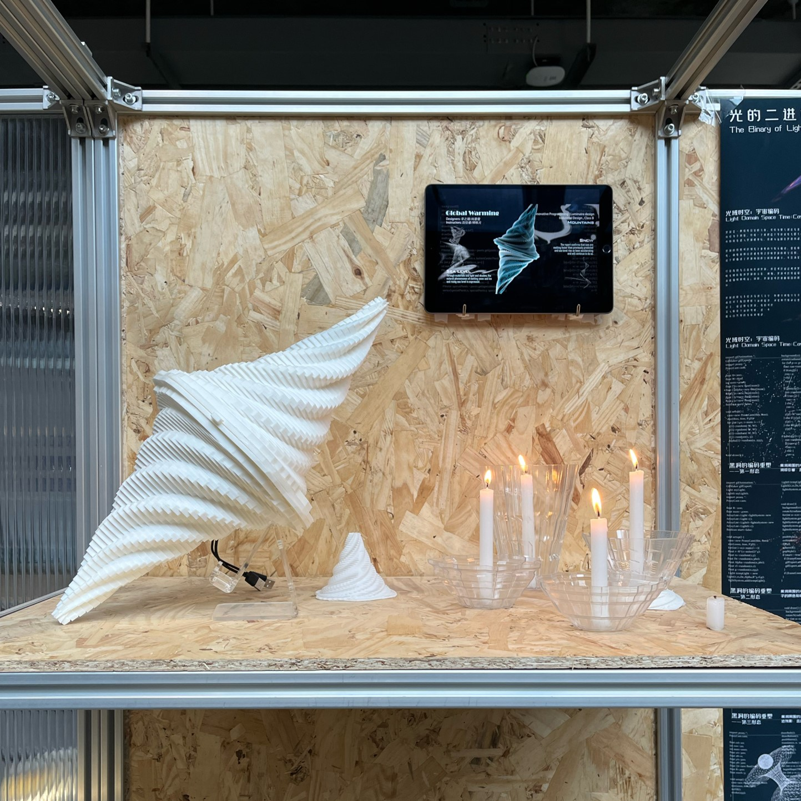
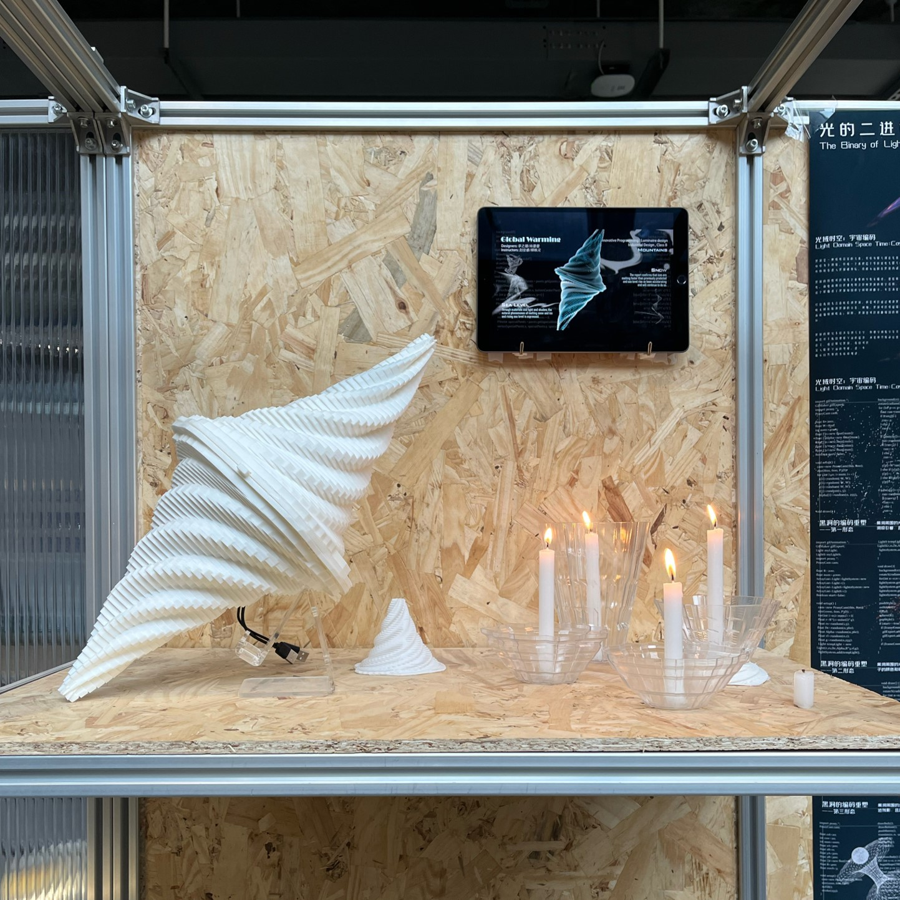
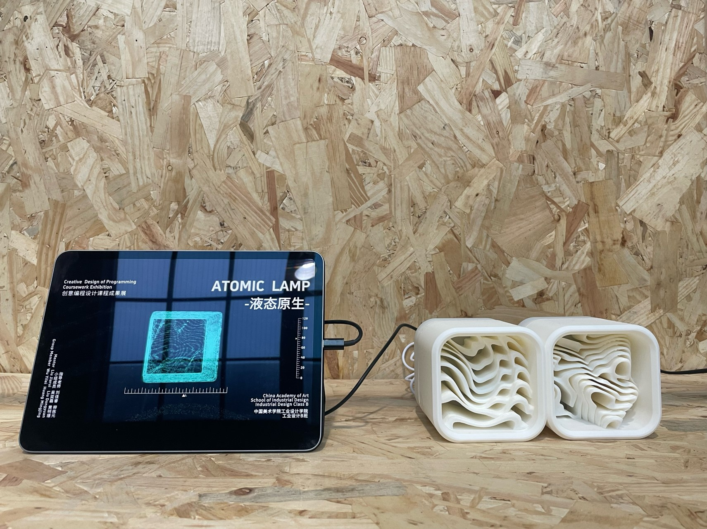
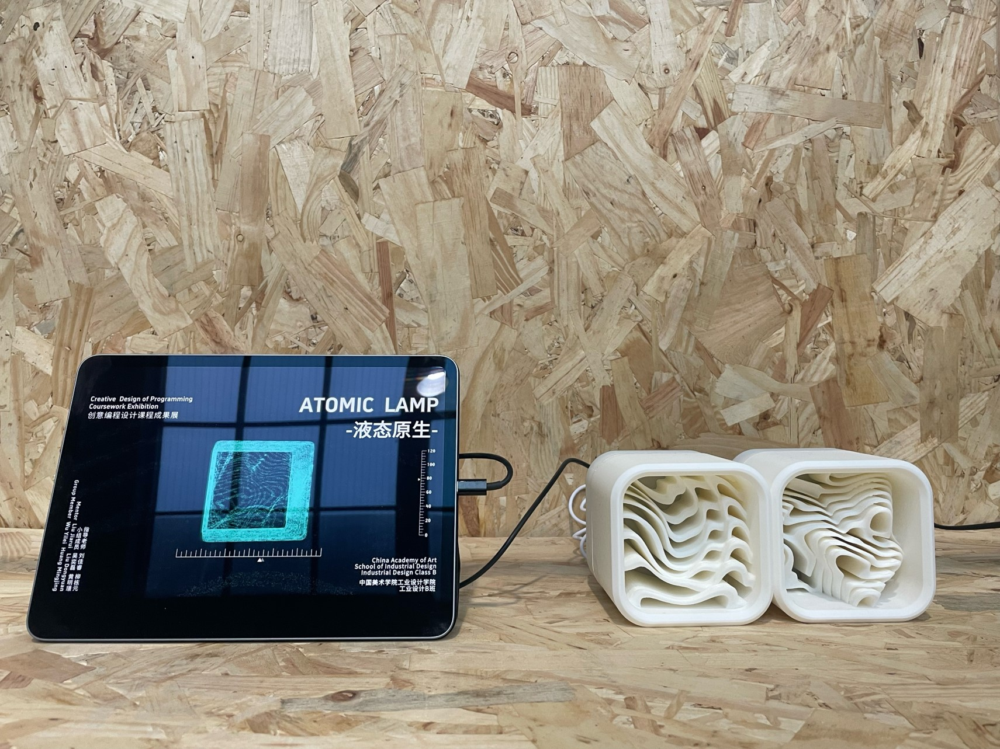

Creative Coding and Design
Creative Coding and Design is a cross discipline course built on collaboration. It uses design as a link to connect the humanities with intelligent manufacturing, and to keep a dynamic balance between them. The course treats design as a way of making. It develops an art and technology mindset, and guides students to explore different ways of making and the meaning behind products. The goal is to help students turn theory into creative ability through practice.

Course Process
The course follows a clear four stage workflow.
- • Concept understanding
- • Practice exploration
- • Integrated creation
- • Evaluation and reflection
These stages are supported by four learning blocks. Students begin with theory learning. They then break down and rebuild key elements as basic units. Next, they move into integrated design practice, where ideas, structure, and media are combined into a complete work. Finally, the course ends with competition and exhibition, which helps students test their work in public presentation and reflect on the full process.
Course Direction
As the field evolves, the course keeps updating its content by linking humanities, mechanical construction, and topics such as artificial intelligence. It is designed as a future oriented course with strong international relevance and cross discipline value. It supports students from different majors who need both cultural thinking and technical making skills.
The course also emphasizes the connection between modern information technology and integrated product construction. It aims to link traditional making with intelligent manufacturing. It uses a matrix like structure to bring knowledge from different fields into one learning system. The content starts from basic computer programming. Based on existing knowledge of mechanical structures and transmission systems, it builds internal links to programming. It also strengthens the understanding of how physical and virtual systems connect, and how structure and form should work together.
Course Goals
Product design is a process of making. It is not only about form. Students need a clear understanding of the object, the building method, and the purpose. In this course, students analyze product structures and design structures, and build models by hand. Through this process, they learn what making means, why we make, and how different making methods shape both function and meaning. The course encourages an inside out way of thinking, and trains students to explore design with a global view.
My Involvement
This was the second time I joined this course at China Academy of Art. The course has been run twice. The first edition explored the theme of light. The second edition explored lanterns, using lantern making as a cultural entry point to connect structure, mechanism, programming, and contemporary expression.
As an instructor, my work focused on helping students build clear links between concept, construction, and digital logic. I guided students to treat a project as a system, to break down elements into controllable parts, and to rebuild them into an integrated prototype. I also supported critique and iteration during the practice and presentation stages, so students could improve both the stability of the making process and the clarity of the final expression.
First Edition - Student Works
The following works are from the first edition of the course, which explored the theme of light.


First Edition - Exhibition
 

 

Second Edition - Lantern Theme
The second edition of the course explored lanterns, using lantern making as a cultural entry point to connect structure, mechanism, programming, and contemporary expression.


Reflection
Creative Coding and Design shows that creative coding is not only about writing code. It is an ability to organize structure, method, and purpose across different media. When making is understood as building relationships within a system, design becomes more than a final outcome. It becomes a repeatable process of testing, adjustment, and integrated creation.